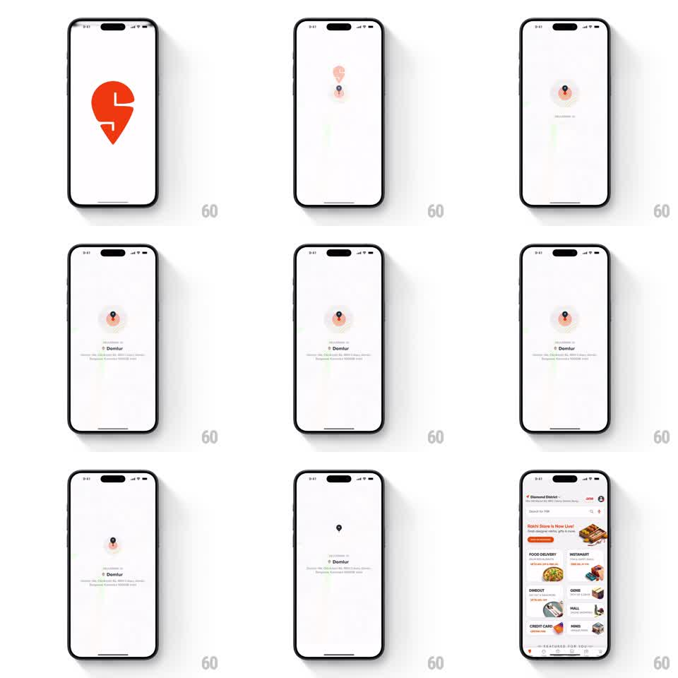

Media
Frame-by-frame

Rebuild this animation 1:1: Swiggy's splash-to-home - the big orange logo shrinks into a map location pin, the "Delivering to" address fades in, and the home screen slides up as the pin collapses into the header.

Rebuild this animation 1:1: Swiggy's splash-to-home - the big orange logo shrinks into a map location pin, the "Delivering to" address fades in, and the home screen slides up as the pin collapses into the header.
## Integration
Integration: stack-agnostic spec - springs given as stiffness/damping, timed motions as duration + curve; map every value to your framework and animation library of choice.
## Scene
White splash with the large orange Swiggy logo. Middle state: the logo is now a small pin on a faint map with a soft orange pulse, "Delivering to - Domlur" and the address below. End state: the home screen - header with location ("Diamond District"), search bar, promo banner ("Rishi Store Is Now Live!"), and the services grid (Food Delivery, Instamart, Dineout, Genie, Mall, Credit Card...).
## Motion spec
Pattern: logo-to-pin collapse feeding a home reveal.
- The logo holds (~700ms), then shrinks toward center (scale to ~0.08, 600ms, ease-in-out), morphing into the map pin as the faint map fades in around it.
- A radar pulse rings outward from the pin (scale 1.0 to 2.2, fade, 1.6s loop, two pulses).
- "Delivering to" and the address fade up beneath the pin (300ms).
- The home screen slides up from the bottom (350ms, ease-out); the pin and address shrink into the header's location slot as it arrives - the pin lands exactly where the header's location icon sits.
- Services grid tiles stagger in bottom-up (40ms apart, 200ms) after the slide completes.
## Calibration
- One continuous object: logo, pin, header icon are the same element at three scales. Any cut breaks the trick.
- The home slide overlaps the pulse fade - no dead air between states.
## Reduced motion
Crossfade splash to home; pin appears in place.
## Don't miss
- The map under the pin is barely-there gray strokes - it suggests streets without competing with content.
- The orange never changes hue across logo, pulse, and pin.